1 095 руб.
Осознанная забота о себе
Выбор добавок Faberlic — с пониманием себя
За 2 минуты разберем ваши привычки и рацион — и подскажем простые решения для энергии, красоты и хорошего самочувствия без лишних баночек
Без обязательных покупок
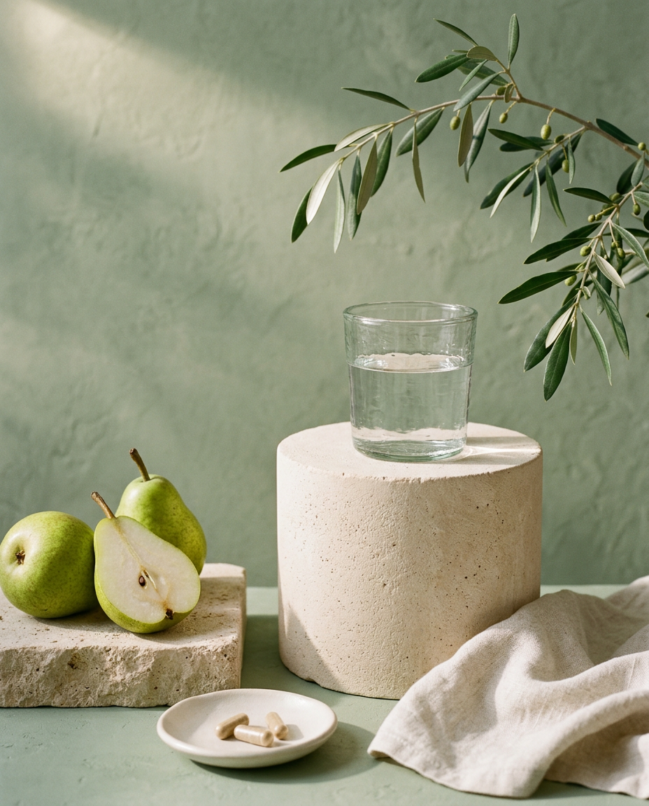
Сначала — вы и ваши привычки.
И только потом — выбор продуктов.
С учетом ваших привычек
Объясним, выбор продуктов
Без обязательных покупок
Узнайте чего не хватает вам
01 / Найдите свою точку отсчёта
С чем хотите разобраться?
В опросе можно выбрать сразу несколько направлений
02 / ВСЁ ПРОЩЕ, ЧЕМ КАЖЕТСЯ
Три шага. Больше ясности
Без сложных терминов и обязательства что-либо покупать.
Расскажите о себе
Ответьте на вопросы о питании, режиме и целях
Получите разбор
Узнайте, на что обратить внимание и с чего начать
Выберите следующий шаг
Сохраните результат, задайте вопрос или изучите продукты
03 / ЗАГЛЯНИТЕ ВПЕРЁДНе просто список баночек
Не просто список баночек
Понятный приём
Вы получите итоговую памятку по своим ответам: выбранные продукты, объяснение выбора и инструкции по приёму. Чтобы не держать всё в голове.
- Понятно, почему выбран каждый продукт
Связь с вашими ответами, а не случайный список.
- Дозировки и условия приёма
По инструкции производителя, с артикулами и длительностью курса.
- План на утро, день и вечер
Что, сколько и когда принимать — с учётом еды и условий инструкции.
- Ограничения — не мелким шрифтом
Что проверить в составе и что обсудить с врачом.
Бесплатно · Без обязательных покупок
ПРИМЕР ВАШЕГО РЕЗУЛЬТАТАМой маленький
Мой маленький
план заботы о себе
Всё важное — на одном листе
Начало: Курс: по инструкции
УтроНачните день
без спешки
без спешки
ДеньНе пропускайте
приём пищи
приём пищи
ВечерОставьте время
на отдых
на отдых
Коллаген с магниемАрт. 16219 · пример записи
Утром за 30 минут до еды · 1 раз в день.
9 г (2 ч. л.) с 100–150 мл напитка. Курс — 1 месяц.
Перед началомСверьте инструкцию и противопоказания. Совместимость и индивидуальную дозу согласуйте с врачом.
04 / ПОЗНАКОМЬТЕСЬ БЛИЖЕМаленькие помощники
Маленькие помощники
Осознанный выбор
Выберите интересующую задачу или найдите продукт по названию.
ВЫБОР КОМАНДЫ / ГОТОВЫЕ НАБОРЫ
Рекомендуют Директора
Четыре направления заботы о себе.
Весь состав — одним нажатием.
Набор 012 продукта
Здоровый сон и антистресс
Забота о спокойствии и восстановлении
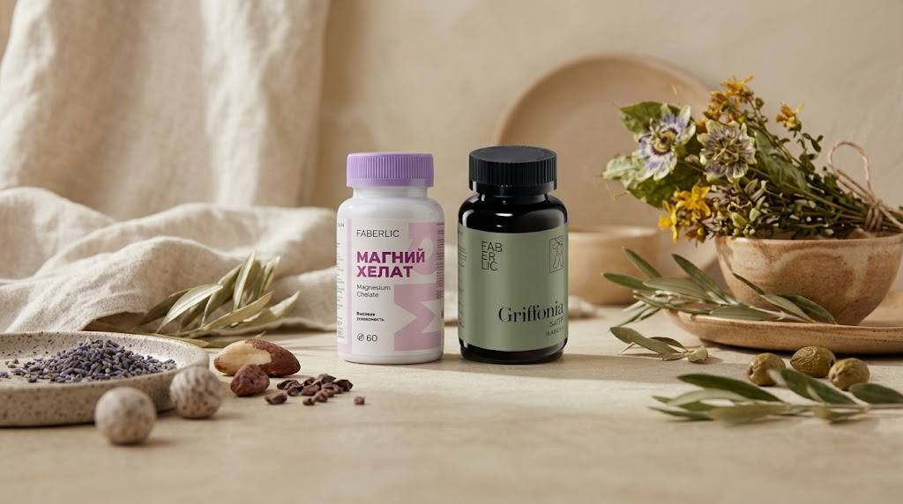
Для тех, кто хочет уделить больше внимания нервной системе, вечернему отдыху и качеству сна.
В составе набора
Цена за продукт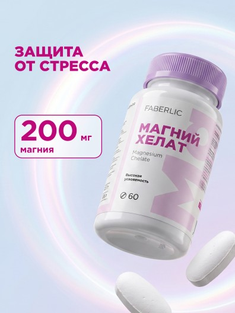
Магний хелат1 499 руб.Арт. 15958Магний в хелатной форме — для поддержки нормальной работы нервной системы и мышц.
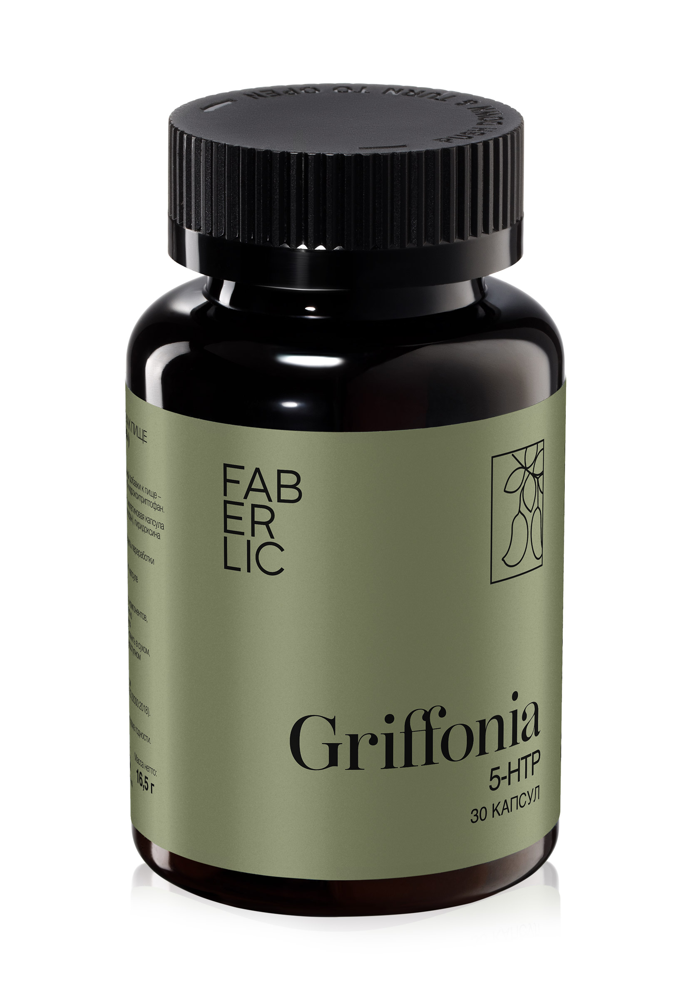
Экстракт гриффонии 5-HTP999 руб.Арт. 15975Источник 5-HTP, предшественника серотонина. Не сочетайте с антидепрессантами без согласования с врачом.
Набор 023 продукта
Энергия и бодрость
Поддержка в активном ритме жизни
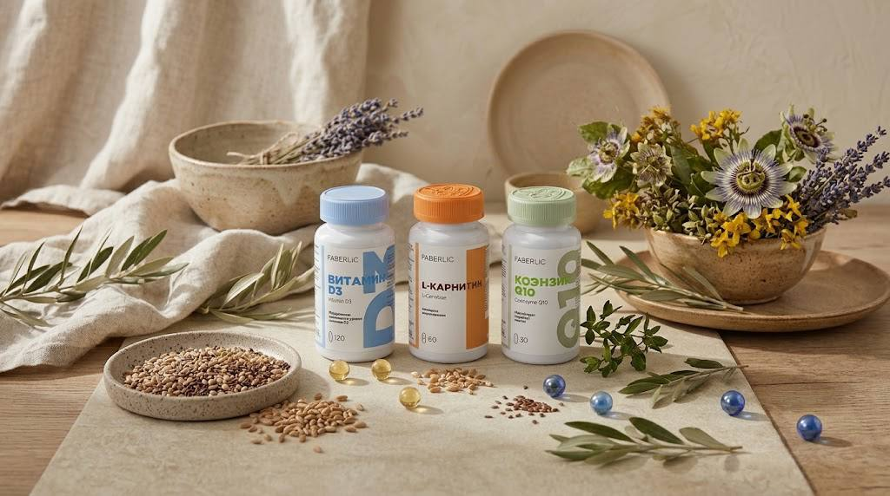
Три продукта для знакомства с нутриентами, участвующими в энергетическом обмене. При длительной усталости важно выяснить её причину с врачом.
В составе набора
Цена за продукт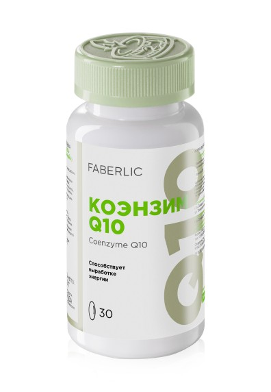
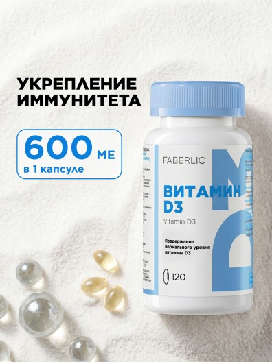
Витамин D3999 руб.Арт. 16140Поддерживает нормальную работу иммунной системы и мышц. Дозировку подбирают с учётом потребности.
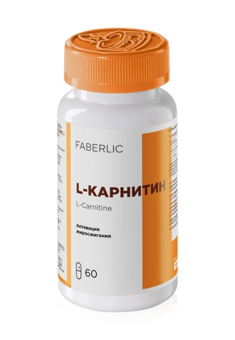
L-карнитин1 599 руб.Арт. 16192Участвует в транспорте жирных кислот для энергетического обмена. Не заменяет питание и физическую активность.
Набор 032 продукта
Крепкий иммунитет и защита
Внимание к себе в сезон простуд
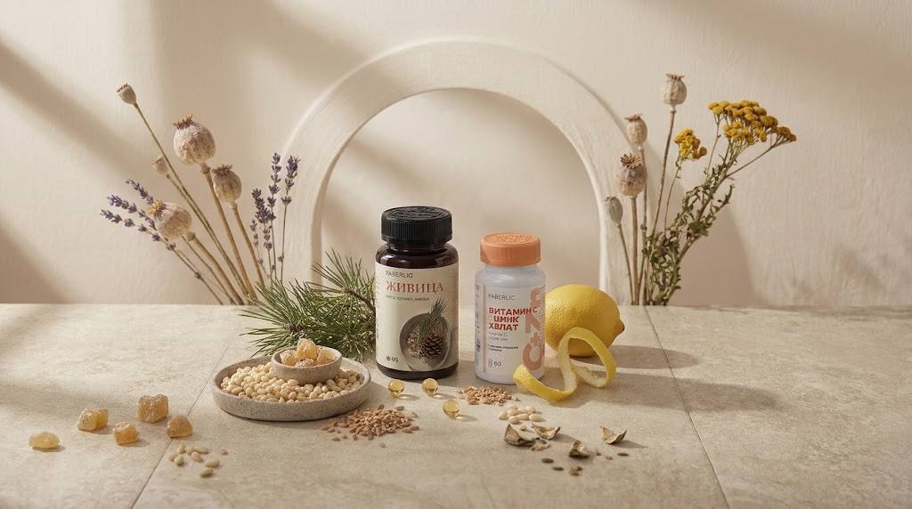
Кедровое масло и комплекс витамина C с цинком — дополнение к разнообразному рациону, сну и повседневной заботе о себе.
В составе набора
Цена за продукт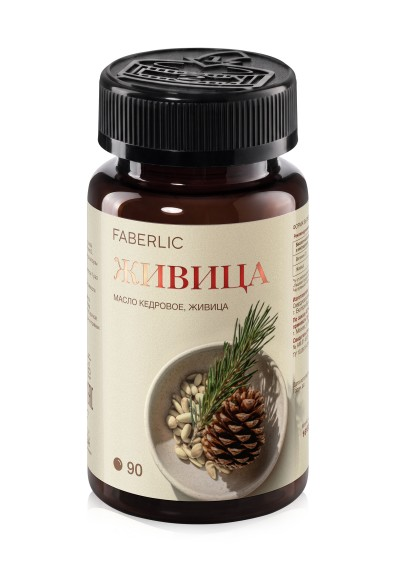
Масло кедровое «Живица»899 руб.Арт. 16155Продукт на основе кедрового масла и живицы. Не является антибиотиком или средством лечения инфекций.
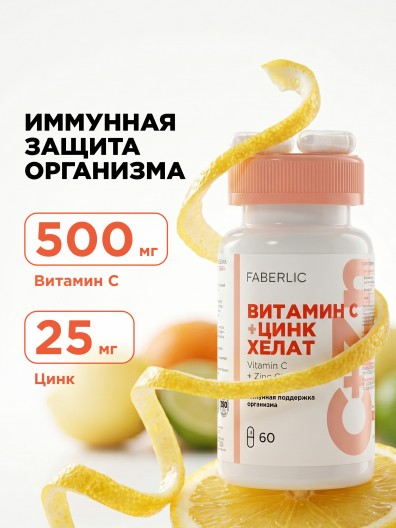
Витамин C + цинк хелат899 руб.Арт. 16139Витамин C и цинк участвуют в нормальной работе иммунной системы и защите клеток от окислительного стресса.
Набор 042 продукта
Здоровые суставы
Забота о свободе повседневных движений
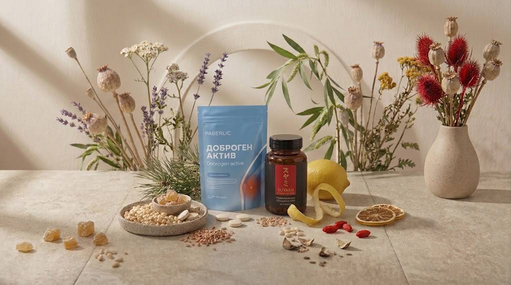
Подборка для знакомства с продуктами для опорно-двигательного аппарата. Не заменяет обследование при боли и ограничении подвижности.
В составе набора
Цена за продукт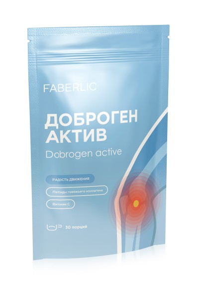
Доброген Актив1 999 руб.Арт. 16223Комплекс на основе гидролизата коллагена, желатина и витамина C. Витамин C участвует в образовании коллагена.
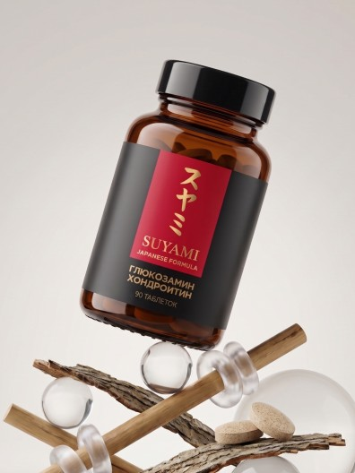
Глюкозамин Хондроитин1 999 руб.Арт. 16178Источники компонентов хрящевой ткани в комплексе Suyami Japanese Formula. Результат приёма индивидуален.
05 / ОСТАЛИСЬ ВОПРОСЫ?Давайте
Давайте
разберёмся
Что я получу после заполнения анкеты?
Ориентиры по питанию и привычкам и автоматические варианты добавок с проверенным составом — без вопроса о сумме и ценового потолка. Аллергены и известные ограничения проверяются для каждого продукта. При беременности, обострении или тревожных симптомах подбор останавливается. Это не медицинское назначение.
Нужно ли покупать всё из подборки?
Нет. Подборка — не обязательный список покупок: вы сами выбираете продукты и комфортную сумму. В «Моём наборе» можно удалить лишнее или изменить количество.
Можно ли подобрать БАДы, если я принимаю лекарства?
Укажите принимаемые средства: они не отключают весь подбор, но могут исключить отдельные продукты. Неуточнённые лекарства и уже принимаемые добавки требуют индивидуальной проверки. Анкета не проверяет все взаимодействия и суммарные дозы — возможность сочетания подтвердите у врача. Назначенные лекарства не отменяйте.
Кто увидит мои ответы?
Ответы используются только в открытой вкладке браузера и не отправляются на сервер. Они не сохраняются в аккаунте или хранилище браузера. После перезагрузки страницы анкету нужно будет заполнить заново. Сохранить результат можно в блоке «Поделиться»: отправить PDF или картинки, а также скопировать артикулы и наименования.
ВАШ ПЕРВЫЙ ШАГ
Начните с понимания
Сначала ваши привычки — затем выбор добавок.
Несколько вопросов помогут увидеть, на что обратить внимание.
В вашем темпе · Без обязательных покупок